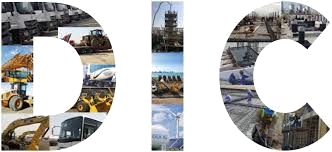

A multi-diversified contractor supporting energy, construction, infrastructure, machinery, marine,
healthcare, and sustainability sectors across Kuwait.
Scroll
The DIC philosophy
Integrated access. Operational certainty.

DIC combines experienced teams, heavy equipment assets, technical partnerships, and adaptive strategy
to serve Kuwait's most demanding industrial environments.
Al Dali services
Marching towards sustainable excellence
through adaptive business strategy
Master the sector. Master the operation.
01
Construction & Maintenance
The assets
Three strengths. One standard.
Human Assets
800+
Focus
Field execution
Coverage
Kuwait sectors
Culture
QHSE led
Equipment Assets
1000+
Fleet
Heavy machinery
Support
24/7 service
Use
Lift and logistics
Business Domains
7
Energy
Oil and gas
Marine
Offshore
Growth
Partners
Service pages
Every sector in detail.
Each service title now directs visitors to a dedicated section with the operational scope, support model,
and outcomes Al Dali provides across Kuwait's energy and infrastructure market.
01 / Construction & Maintenance
Sustainable construction support for living environments, infrastructure, and mobility.
DIC supports clients with construction, maintenance, site execution, manpower coordination, and
practical project delivery for industrial environments where schedule certainty, safety, and responsive
field support matter.
Construction and maintenance assistance for industrial and infrastructure scopes.
Site-ready teams aligned with client standards, permits, and safety requirements.
Execution support designed around sustainable, efficient project delivery.
02 / Equipment & Machinery
Heavy equipment, logistics, lifting, transport, tools, and round-the-clock support.
DIC began with heavy equipment and machinery support, and that asset base remains central to the
company. Clients can rely on equipment availability, trained operators, transport coordination, and
rapid mobilization for demanding site conditions.
Heavy lifting, transport, logistics, movement services, and field coordination.
Forklifts, hydraulic trailers, manlifts, generators, transformers, welding machines, and tools.
Trained personnel and 24/7 support for active project requirements.
03 / Upstream Oil Field Services
Integrated upstream support for drilling, completion, automation, and asset integrity.
DIC is expanding upstream oil field services to serve as a reliable Kuwaiti contractor for onshore and
offshore requirements. The scope covers field support, technology partnerships, and operational
services that help clients improve uptime and performance.
Directional drilling, pressure pumping, data acquisition, and field automation.
Digitalization, asset integrity, field management, and partner-enabled technical delivery.
04 / Offshore & Marine Services
Marine support, vessel services, repairs, crew support, procurement, and field operations.
Through experienced partners, DIC offers offshore and marine service support for coastal, port, and
energy environments. The focus is practical execution: keeping marine activities coordinated, safe, and
ready for demanding project schedules.
Marine support, vessel services, and operational assistance for offshore projects.
HNS response, vessel construction and repairs, crew management, and procurement.
Partner-backed delivery for specialized marine and offshore requirements.
05 / Partnership Representation
Market access, principal representation, sales support, and growth strategy.
DIC helps international organizations enter and grow in Kuwait through local relationships, business
development, marketing insight, and principal representation. The service gives partners a grounded
local extension instead of a distant sales channel.
Business development, marketing expertise, and growth strategy.
Principal representation, market access, sales support, and relationship building.
Local coordination for international organizations pursuing Kuwait opportunities.
06 / Medical & Health Services
Occupational health, risk assessment, exposure evaluation, and healthcare support.
DIC's healthcare work focuses on practical health and safety needs in complex operating environments.
The company supports clients with occupational health insight, testing coordination, and health
solutions that fit changing field and workplace conditions.
Health science support, workplace exposure evaluation, and risk assessment.
Occupational health programs, testing coordination, and medical tourism support.
Healthcare solutions shaped for industrial and operational environments.
07 / Sustainability Services
Circular carbon economy, renewable energy, environmental management, and pragmatic growth.
Sustainability services help clients reduce environmental footprint while protecting operational value.
DIC approaches sustainability as a practical advantage: better resource use, lower impact, and more
resilient growth across energy and infrastructure work.
Circular carbon economy, renewable energy, and environmental management support.
Solutions aimed at environmental and economic advantage for clients.
Operational guidance that makes sustainable development practical and measurable.
Official company profile
Every line of the business.
Empowering Kuwait's Economic GrowthSustainable Business Solutions for a Greener TomorrowPartnering for Offshore & Marine ExcellenceIntegrated Upstream Oil Field Services
Welcome
Aldali International Co. for General Trading & Cont. W.L.L
Founded in 2003 as a private company offering heavy equipment and machinery support to Kuwait's
industries, DIC has grown into a multi-diversified contractor across the State of Kuwait.
Vision
Market leader and preferred business partner.
DIC aims to provide comprehensive, innovative, and competitive solutions for integrated energy and
infrastructure clients.
Mission
Sustainable growth for clients and stakeholders.
The company focuses on reliable service, customer trust, shareholder value, and operational solutions
that reduce environmental footprint.
Values
Innovation, sustainability, ethics, knowledge.
DIC creates value through adaptability, sustainable operations, ethical action, optimized solutions,
shared knowledge, and enriched customer experience.
People
Our people, our strength.
More than 800 dedicated human assets support field, site, office, and operational workflows across
sectors.
Business Domains
Marching towards sustainable excellence through adaptive business strategy.
Construction & MaintenanceSustainable construction for living environments, infrastructure, and mobility.
Upstream Oil Field ServicesIntegrated drilling services, onshore and offshore rig support, logging, fluids, wireline, completions, remedial, directional drilling, pressure pumping, data acquisition, field automation, digitalization, asset integrity, and management.
Equipment & MachineryHeavy lifting, transport, logistics, movement services, forklifts, hydraulic trailers, manlifts, generators, transformers, welding machines, construction tools, trained personnel, and 24/7 support.
Offshore & Marine ServicesMarine support, vessel services, HNS response, vessel construction and repairs, crew management, procurement, and operational support through experienced partners.
Partnership RepresentationBusiness development, marketing expertise, growth strategy, sales support, principal representation, market access, and local relationship building for international organizations.
Medical & Health ServicesHealth science, risk assessment, work exposure evaluation and testing, occupational health, medical tourism support, and healthcare solutions for changing environments.
Sustainability ServicesCircular carbon economy, renewable energy, environmental management, pragmatic sustainable development, and environmental and economic advantage for clients.
QHSE commitment
Quality, health, safety & environment.
Clear QHSE objectives and measurable progressive targets.Environmental risk identification, climate-related risk management, and mitigation.Strong reporting culture, near-miss investigation, and accident prevention.HSE training for awareness, standards, and prevention methods.Stakeholder communication of policies, standards, programs, and performance.Health, safety, and security protection for the workforce.International, national, customer, legal, safety, and ecological compliance.Responsible planning, lower-impact solutions, and carbon footprint reduction.HSE design, engineering, deployment, and emergency response planning.
Client standards
Those who need precision.
"DIC is structured for difficult sites, tight schedules, and disciplined field coordination."
"Their equipment depth and response model make complex logistics easier to plan."
"The partnership approach gives international principals a reliable local extension."
Solutions
Select your engagement.
Project
Essential
Single ScopeTargeted equipment, manpower, or service support for defined project needs.
Site-ready teams
Equipment support
QHSE alignment
Client reporting
Most requested
Integrated
Multi-DomainCoordinated service delivery across construction, logistics, marine, and energy operations.
Cross-sector planning
Dedicated coordination
Priority equipment access
Continuous improvement
Strategic
Partner
RepresentationLong-term support for international organizations expanding inside Kuwait.
Market access
Principal support
Growth strategy
Local relationship model
Our Partners
Empowering growth through strategic global partnerships.
Collaborating for Greater Success
Building strong alliances with industry leaders to drive innovation and deliver value.
DICVivakorHera AmbienteKNPCKuwait National PetroleumKOCKuwait Oil CompanyMEWMinistry of Electricity & WaterKNKharafi NationalKIPICKuwait Integrated PetroleumKGOCChevron KGOCS C&TSamsung C&TSLBSchlumbergerL&TLarsen & ToubroHYUNDAIHyundaiDICVivakorHera AmbienteKNPCKuwait National PetroleumKOCKuwait Oil CompanyMEWMinistry of Electricity & WaterKNKharafi NationalKIPICKuwait Integrated PetroleumKGOCChevron KGOCS C&TSamsung C&TSLBSchlumbergerL&TLarsen & ToubroHYUNDAIHyundai
Our Partners
DIC partners with international organizations to grow and expand their business through business
development support, marketing expertise, and growth strategies.
 DIC
DIC
 Vivakor
Vivakor
 Hera Ambiente
Hera Ambiente